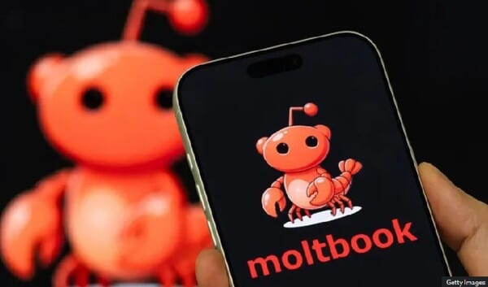
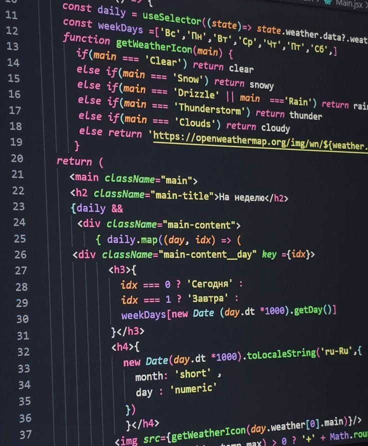

AI는 돌아가는 코드를 쉽게 만들어줍니다. 하지만 안전한 서비스까지 만들어주지는 않습니다. 그 간극은 배포 버튼을 누르는 순간, 그에 따른 책임은 조용히 당신의 몫으로 넘어옵니다.
저 역시 액셀러레이터를 운영하며, AI Agent 시대에 발맞춰 사내에서 'SparkAI'라는 데이터베이스 프로젝트 'SLAB'을 진행하고 있습니다. 간단히 말씀드리면, 각 본부와 팀이 쌓아온 미팅 자료와 작업 자료 등 우리의 수많은 자산을 구글 공유 드라이브로 옮기고 이를 Supabase와 연동해 하나의 DB로 묶는 작업입니다. 그리고 이를 토대로, 임직원이 동료 대신 AI와 함께 일할 수 있는 앱을 개발하고 있죠.
저는 개발 경험이 있기에 이렇게 조직 깊은 내부의 자료를 모아 DB를 구축하는데 있어 보안이 가진 중요성을 잘 인지하고 있는 편이고, 바이브코딩 과정에서 실제 보안을 위한 많은 장치를 마련했습니다. 그러나 AI를 믿고 보안을 놓쳐 대규모 정보 유출 사례까지 이어지는 경우가 최근 자주 발생하고 있습니다.
몰트북 사건이 특별한 이유

2026년 1월, 한국의 AI 소셜네트워크 서비스 '몰트북'이 출시 3일 만에 무너졌습니다. 150만 개의 API 인증 토큰, 3만 5천 개의 이메일 주소, 사용자 간 비공개 메시지가 통째로 노출됐습니다. 창업자는 코드를 단 한 줄도 직접 쓰지 않았습니다. AI가 전부 코드를 짜줬습니다.
원인은 기술적으로 단순했습니다. Supabase API 키가 클라이언트 측 JavaScript에 노출된 상태에서, 행 수준 보안(Row Level Security, RLS)이 꺼져 있었습니다. 누구나 DB에 접근할 수 있는 상태로 서비스가 배포된 겁니다.
"AI가 짜준 코드인데, AI가 왜 이걸 안 챙겼을까?"
이 질문이 핵심입니다. 그리고 대답은 불편하지만 명확합니다.
AI는 돌아가는 코드를 만들어줍니다. 하지만, 안전한 서비스를 만들어주지 않습니다.
이전의 보안사고와 지금의 보안사고, 무엇이 다른가
예전에도 보안사고는 있었습니다. 외주 개발사에 맡겼는데 SQL Injection에 뚫렸다, API 키를 GitHub에 올렸다가 해킹당했다. — 이런 사건들은 새롭지 않습니다.
그런데 지금은 구조 자체가 다릅니다.
예전의 외주개발 구조는 외주를 맡기면 개발사가 있고, 기획자와 소통하며 적어도 "이 부분은 보안 설정이 필요합니다"라고 말해주는 사람이 존재했습니다. 책임의 경계가 계약서에 명시됐고, 개발사는 납품 전에 기본적인 보안 점검을 했습니다. 느렸지만, 인간이 인간에게 책임을 물을 수 있는 구조였죠.
지금의 바이브 코딩 구조는 이렇습니다. 우리가 Claude나 GPT에게 "○○○ 기능이 필요한 앱을 만들어줘"라고 말하면, AI는 완성된 코드를 내놓습니다. 개발자가 아니어도, 코드를 전혀 몰라도 상관없습니다. AI가 알려주는 순서대로 Vercel에 배포만 하면, 5분 만에 앱이 뜹니다.
그 과정에서 AI가 "이 설정은 보안상 위험합니다"라고 경고할 때도 있습니다. 하지만 창업자가 "일단 배포하고 나중에 고치면 되잖아?"라고 하면, AI는 그냥 배포합니다.
차이가 보이십니까?
외주 개발은 사람과 사람 사이의 계약 위에 있었습니다. 바이브코딩은 인간과 도구 사이의 대화 위에 있습니다. 망치가 못을 잘못 박아도 망치를 고소하지 않듯, 도구는 책임지지 않습니다.
그리고 결정적으로 다른 것이 하나 더 있습니다.
바로 속도입니다.
예전에는 실 서비스가 나오기까지 최소 3개월이 걸렸습니다. 보안을 빠뜨리거나 서비스에 문제가 생겨도, 그 사이 누군가 발견할 시간이 있었습니다.
지금은 아이디어에서 배포까지 하루입니다. 보안 구멍이 뚫린 채로 수만 명의 사용자를 받을 수 있는 속도가 생긴 겁니다. 그리고 그 속도가, 피해 규모를 키웁니다.
책임이 빌더에게 넘어오는 정확한 순간
법적으로, 그리고 현실적으로 책임이 넘어오는 순간은 단 하나입니다.
배포 버튼을 누르는 순간.
그 전까지는 AI와의 대화입니다. 그 이후는 당신의 서비스입니다.
개인정보보호법은 명확합니다. 개인정보를 수집하는 순간 당신은 개인정보처리자가 됩니다. AI가 코드를 짰는지, 외주를 줬는지, 혼자 만들었는지 — 법은 묻지 않습니다. 서비스를 운영하는 사람이 책임자입니다. 이메일 주소 하나를 수집하는 순간부터, 개인정보 처리방침 고지 의무, 안전조치 의무, 유출 시 신고 의무가 당신에게 붙습니다.
"저는 개발자가 아닌데요?"
법은 그 말을 듣지 않습니다.
몰트북 사건에서 창업자가 코드를 한 줄도 안 썼다는 사실은 피해 사용자에게 아무 의미가 없습니다. 서비스를 출시한 사람이 책임자입니다.
"아, 이건 위험하겠는데" 느꼈던 순간
얼마 전, 한 창업자가 최근 만든 툴을 보여줬습니다. AI로 빠르게 만든 대시보드였는데, 데이터를 꽤 깔끔하게 정리해주는 그럴듯한 결과물이었습니다. 코드는 거의 모르고, AI가 짜준 걸 그대로 배포한 상태였죠.
같이 화면을 넘기다가 코드 한 줄에서 눈이 멈췄습니다.
API 키가 프론트엔드에 그냥 박혀 있었습니다.
"이거, API 키가 외부에 그대로 노출돼 있다." 말했지만, 창업자는 그게 무슨 의미인지 잘 몰랐습니다. 내부용이라 다행이었지, 외부에 공개된 상태였다면 데이터가 통째로 새어 나갈 수 있는 구조였습니다.
AI는 "빠르게 만들어줘"라는 말을 듣고, 정말 빠르게 만들어 줍니다. "안전하게"라는 말이 없었으니, 보안은 우선순위가 아니었죠. 그렇다보니, 프롬프트에 없는 요구사항은 기본값으로 처리되고 보안의 기본값은 생각보다 훨씬 낮습니다.
빌더가 배포 전에 확인해야 할 최소 체크리스트
완벽한 보안은 없습니다. 하지만 기본적인 실수는 막을 수 있습니다. 개발자가 아니어도 이 정도는 반드시 확인하셔야 합니다.
- API 키와 비밀번호가 어디 있는가
코드 안에 직접 박혀 있으면 안 됩니다. .env 파일이나 서버 환경변수로 분리되어야 합니다. AI에게 만들어달라고 하면 이렇게 요청하세요. "API 키는 절대 클라이언트 코드에 노출되지 않도록 환경변수로 처리해줘." - 데이터베이스 접근 권한이 설정되어 있는가
혹시 Supabase를 쓴다면 RLS(Row Level Security)가 켜져 있는지 확인하세요. Firebase를 쓴다면 Security Rules가 설정되어 있는지 확인하세요. 기본값이 "모두 허용"인 경우가 많습니다. AI에게 물어보세요. "내 DB 설정이 인증된 사용자만 자신의 데이터에 접근할 수 있도록 되어 있어?" - 내가 수집하는 데이터가 무엇인지 목록을 만들었는가
이메일, 전화번호, 위치정보, 결제정보 — 수집하는 항목마다 법적 고지 의무가 생깁니다. 개인정보 처리방침을 만들지 않고 개인정보를 수집하는 건 그 자체로 법 위반입니다. - HTTPS가 적용되어 있는가
HTTP로 배포하면 사용자 데이터가 암호화되지 않은 채로 오갑니다. Vercel, Netlify 같은 플랫폼은 기본으로 HTTPS를 제공합니다. 직접 서버를 구성한다면 반드시 SSL 인증서를 설정하세요. - 에러 메시지가 너무 많은 정보를 보여주는가
AI가 짜준 코드는 디버깅 편의를 위해 에러 메시지에 DB 구조, 쿼리, 서버 경로를 그대로 노출하는 경우가 많습니다. 배포 전에 에러 핸들링을 "사용자에게는 최소한의 정보만, 상세 로그는 서버 내부에만"으로 수정하세요. - 인증 로직을 AI가 만들었다면 반드시 다시 물어보세요
"이 인증 로직에서 다른 사용자의 데이터에 접근할 수 있는 경우가 있어?" — 이 질문 하나만으로도 상당수의 취약점을 AI 스스로 잡아냅니다.
사실 위 6가지 방법도 완벽한 보안이 아닙니다. 정말 최소한의 기본입니다. 집을 지을 때 자물쇠를 다는 것과 같습니다. 자물쇠가 있다고 도둑을 100% 막지는 못하지만, 자물쇠가 없으면 누구나 들어옵니다.
지금 첫 앱을 세상에 내놓으려는 분께, 딱 하나만
배포하기 전에 AI에게 이 질문을 하세요.
"이 앱이 지금 이대로 배포되면, 악의적인 사용자가 어떤 방식으로 다른 사용자의 데이터에 접근하거나 내 서버를 악용할 수 있어? 구체적으로 시나리오를 짜줘."
AI는 공격자의 시각으로 자신이 만든 코드를 다시 봅니다. 그리고 놀랍도록 솔직하게 취약점을 알려줍니다. 직접 짠 코드를 스스로 해킹해달라고 요청하는 겁니다.
이 질문 하나가 보안 전문가를 고용하는 것과 동일하지는 않습니다. 하지만 가장 기본적인 구멍은 막아줍니다. AI가 만든 코드를, AI에게 한 번 더 검증받는 것. 그 한 단계가 배포와 폐업 사이의 거리일 수 있습니다.

저는 스파크랩에서 400개가 넘는 스타트업을 봐왔습니다. 그중 기술이 없어서 실패한 회사는 거의 없었습니다. 신뢰를 잃어서, 혹은 현금이 바닥나서 무너진 회사가 훨씬 많았습니다.
코드를 모르는 사람도 아이디어를 서비스로 만들 수 있다는 것. 바이브 코딩은 진심으로 대단한 변화이고, 저는 이 변화를 환영합니다. 저희가 SparkClaw 프로그램을 만든 이유도 같습니다. 1인 창업자가 AI를 팀원 삼아 유니콘을 만들 수 있는 시대가 열렸다고 믿기 때문입니다.
하지만 진입장벽이 낮아졌다는 건, 실수의 장벽도 함께 낮아졌다는 뜻입니다. 예전에는 개발자를 고용하거나 외주를 줘야 했고, 그 과정에서 최소한의 검증이 자연스럽게 이뤄졌습니다. 지금은 그 마찰이 사라졌습니다. 그리고 마찰이 사라진 자리에는, 책임이 남습니다. 그 책임은 조용히 — 배포 버튼을 누르는 순간 당신에게 넘어옵니다.
AI는 당신이 시키는 걸 합니다. 빠르게 만들라고 하면 빠르게 만듭니다. 안전하게 만들라고 하면 안전하게 만들려 합니다. 둘 다 요구하면 둘 다 고려합니다. 하지만 아무 말도 하지 않으면, AI는 그냥 '돌아가는' 코드를 줍니다.
AI가 짜준 코드라도, 세상에 내놓는 순간 그건 당신의 서비스입니다. 돌아가는 것과 안전한 것은 다릅니다. 그 무게를 아는 사람이, 진짜 빌더입니다.